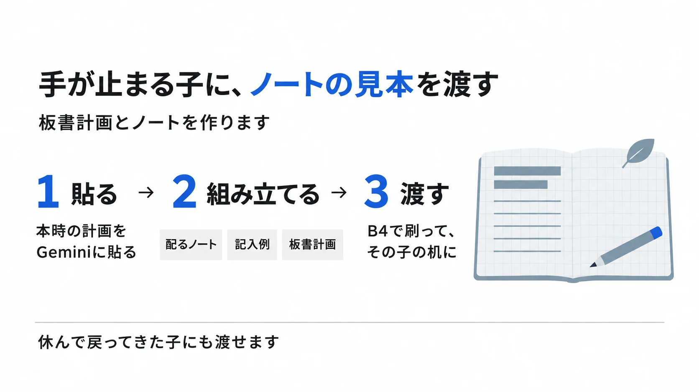
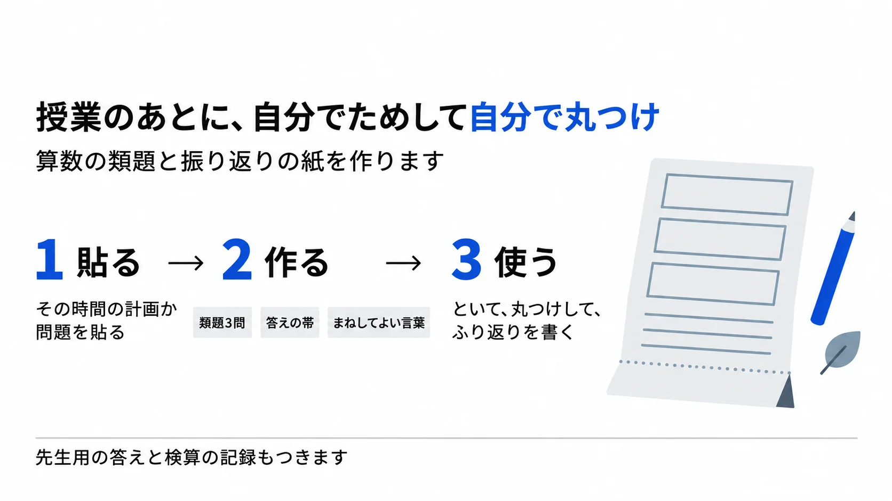
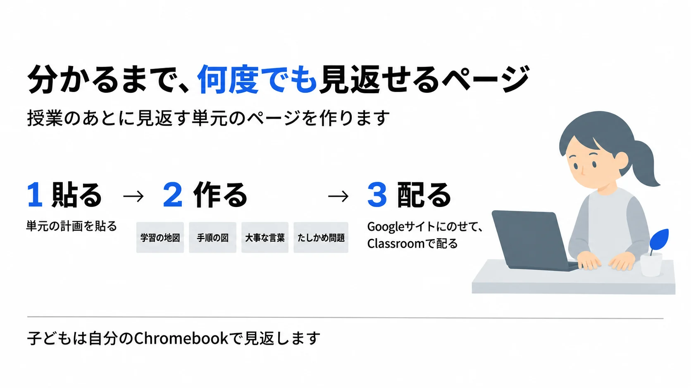
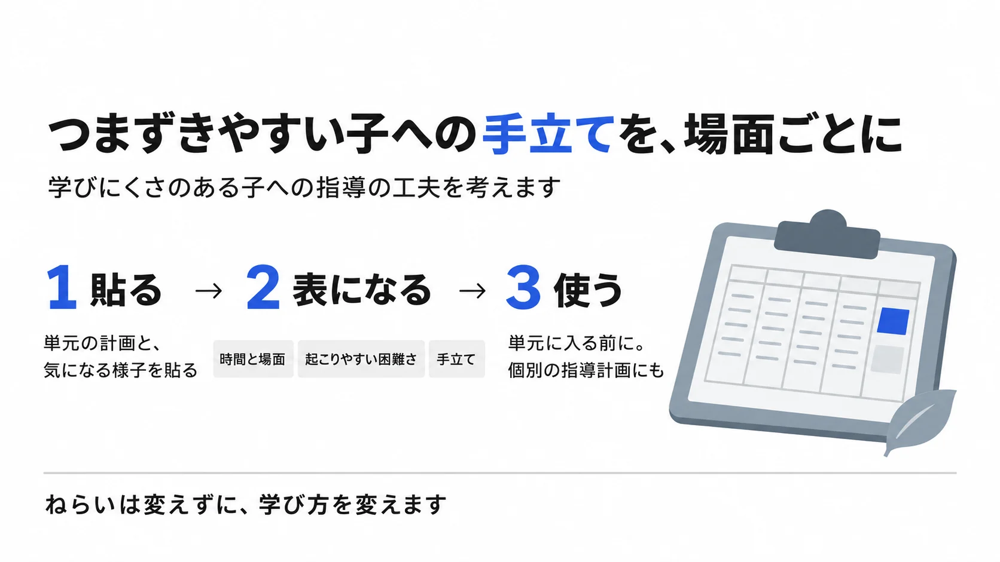
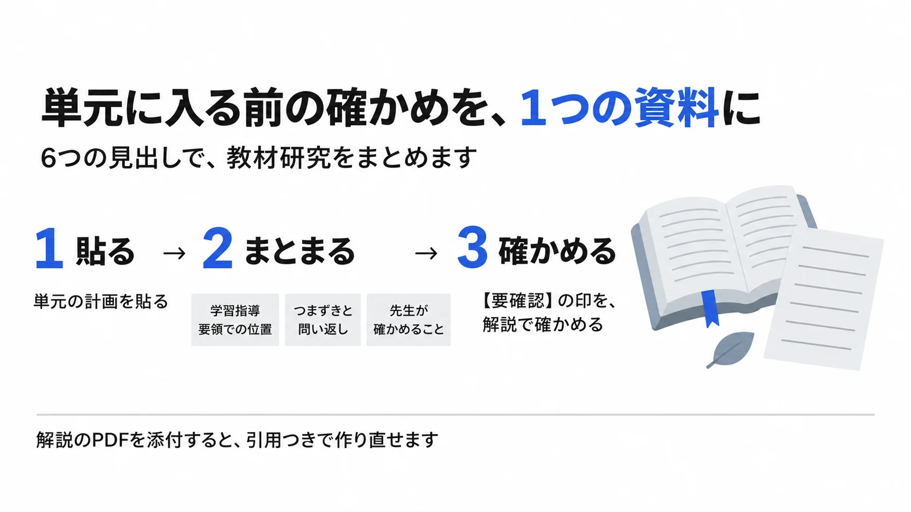
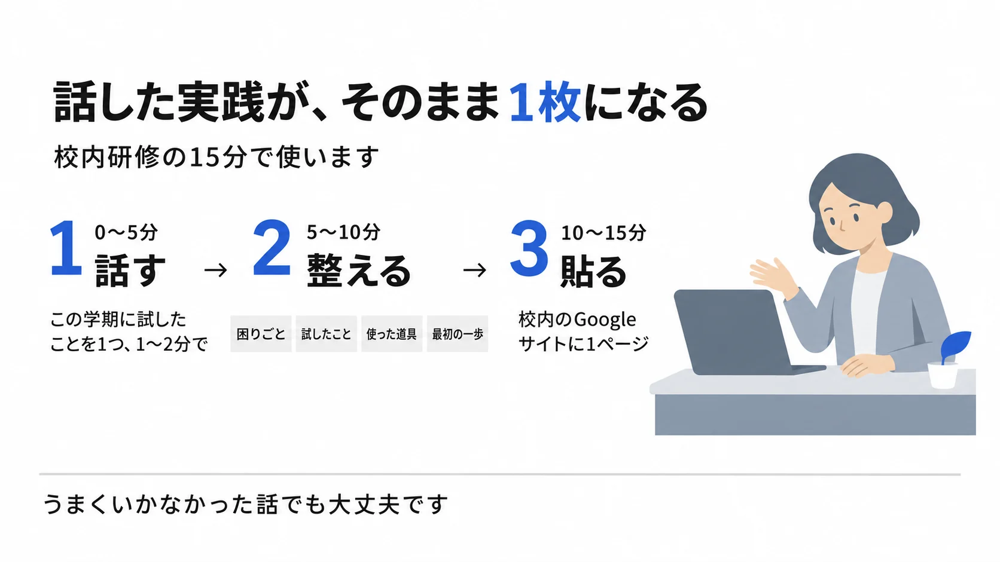

01
ノートの見本（板書計画とノート）
@bansho-note
| 誰が助かるか | 書き方が分からず手が止まる子と、休んで戻ってきた子が助かります。 |
|---|---|
| できるもの | 本時の計画から、配るノートと、ノートの記入例と、板書計画の3枚ができます。 |
| 使う場面 | この子に渡したい、と思う時間の前の日に使います。 |
毎回同じように頼んでいる授業の準備を、Geminiに覚えておいてもらいます
授業の計画を貼ると、手が止まる子に渡すノートの見本、学びにくさのある子への手立ての表、授業のあとに子どもが見返すページなどができます。小学校の学級担任が、自分の学級で使ってきた頼み方をまとめたものです。
スキルは、Geminiに仕事の進め方を覚えておいてもらうしくみです。一度取りこめば、入力欄で「@」と名前を打つだけで呼び出せます。プロンプトを毎回貼る必要はありません。
子どもの名前や、学校の外に出せない情報は貼らないでください。子どもの書いたものを扱うときは、名前の列を消して、学校のアカウントのGeminiを使います。個人のアカウントで試すときは、「試しに貼る見本」だけにしてください。
「見本をコピー」は、架空の学級で作った入力の例をコピーします。取りこんだあと、まずこれを貼って、どんなものができるかを見てください。
@bansho-note
| 誰が助かるか | 書き方が分からず手が止まる子と、休んで戻ってきた子が助かります。 |
|---|---|
| できるもの | 本時の計画から、配るノートと、ノートの記入例と、板書計画の3枚ができます。 |
| 使う場面 | この子に渡したい、と思う時間の前の日に使います。 |
@ruidai-furikaeriCanvasを使う
| 誰が助かるか | 授業のあとに自分でためして丸つけをしたい子と、振り返りに何を書けばよいか分からず手が止まる子が助かります。 |
|---|---|
| できるもの | 1時間分の計画か問題から、類題3問前後と、自分で丸つけする答えの帯と、まねしてよい言葉つきの振り返りの欄があるA4の紙と、先生用の答えと検算の記録ができます。 |
| 使う場面 | 算数の授業の前の日か当日の朝に、その時間の問題を貼って使います。 |
元にした実践：4月から毎時間続けている、算数の類題と手書きの振り返りの実践
@tangen-siteCanvasを使う
| 誰が助かるか | 黒板とノートで説明を聞いても、まだ分からなかった子が助かります。分かるまで、授業のあとに自分のChromebookで見返せます。 |
|---|---|
| できるもの | 単元の計画を貼ると、学習の地図、手順の図、大事な言葉、何度でもやり直せるたしかめ問題が1ページになったHTMLができます。 |
| 使う場面 | 単元の初めに作ってGoogleサイトにのせ、Classroomで配っておきます。毎時間のあとに、子どもが見返せます。 |
元にした実践：Gemini授業準備キットの単元サイトのプロンプトと、4年理科で作った見本
@hairyo-kufu
| 誰が助かるか | 読む、書く、聞く、待つなどでつまずきやすい子と、その子を受けもつ学級担任が助かります。 |
|---|---|
| できるもの | 単元の計画から、授業の場面ごとに、起こりやすい困難さと手立てを、解説の配慮の例を引いた表にします。 |
| 使う場面 | 単元に入る前に手立てを考えるときや、個別の指導計画に配慮を書くときに使います。 |
元にした実践：Gemini授業準備キットの合理的配慮のプロンプトと、学習指導要領解説13教科の配慮の例を集めた表
@kyozai-kenkyu
| 誰が助かるか | 単元に入る前に、学習指導要領や解説を開いて確かめる時間がなかなか取れない先生が助かります。 |
|---|---|
| できるもの | 学習指導要領での位置、解説の指導のポイント、つまずきと問い返し、準備と安全、教材のアイデア、先生が確かめることの6つの見出しの資料ができます。 |
| 使う場面 | 新しい単元に入る前の週に、単元の計画を貼って、授業の前に確かめることを洗い出すときに使います。 |
元にした実践：Gemini授業準備キットの教材研究のプロンプトと、4年理科と算数で試した出力
@jissen-ichimaiCanvasを使う
| 誰が助かるか | 同じことで困っている、同じ学校の次の先生が助かります。 |
|---|---|
| できるもの | 先生が1〜2分話した「この学期、こう使ってみた」が、校内のGoogleサイトに貼る1枚と、研修の係に渡す一覧用のカードになります。 |
| 使う場面 | 校内研修の15分で、一人ずつ自分の実践を1枚にして、その場でGoogleサイトに貼るときに使います。 |
元にした実践：Geminiアイデア村（校内の実践をGoogleサイトに集めるしくみ）の設計
はじめの1回だけです。どのスキルも同じ手順です。
ZIPを開けないときは、「中のファイル」を1つずつダウンロードして、同じように選びます。スキルが新しくなったときは、古いものを一覧から消してから、取りこみなおします。
Googleの案内では、学校などのGoogle Workspaceでスキルが使えるようになるのは、個人のアカウントより後になります。入力欄で「@」を打ってもスキルが出てこないときは、次のようにします。中身は同じです。
学校のアカウントでGeminiが使えるかどうか、ファイルを添付できるかどうかは、自治体や学校の設定で変わります。学校の情報担当の先生に確かめてください。